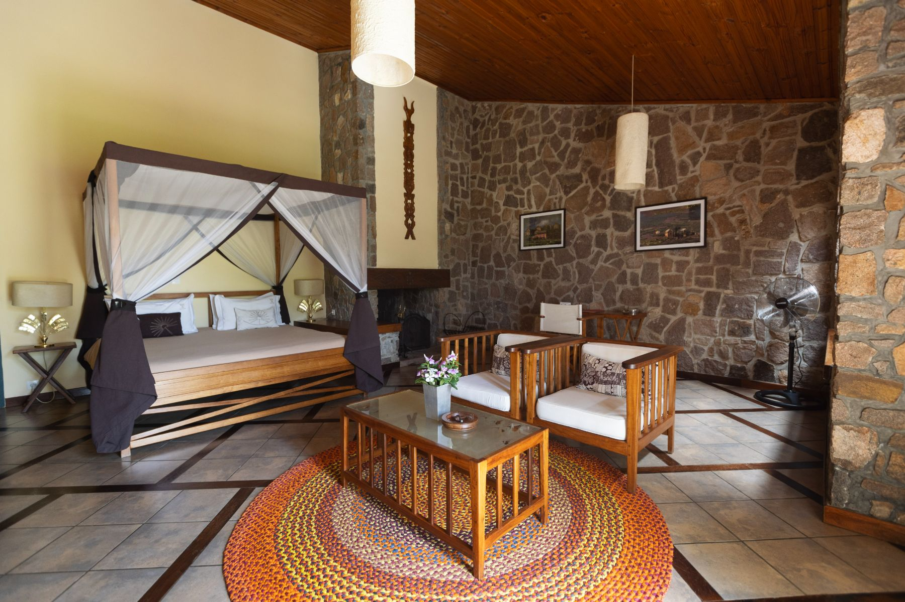
Le Relais de la Reine01 / 16
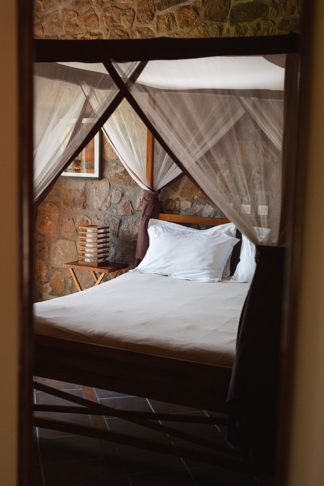
Le Relais de la Reine02 / 16
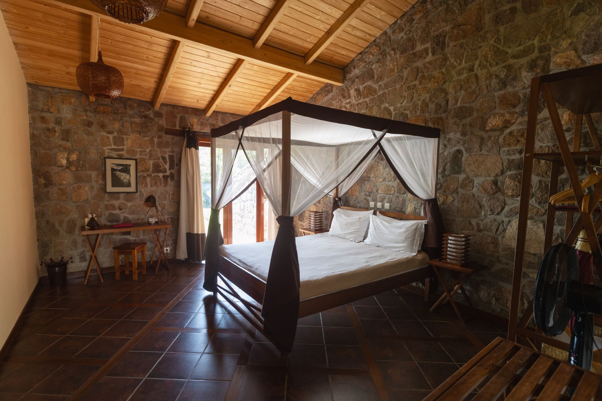
Le Relais de la Reine03 / 16
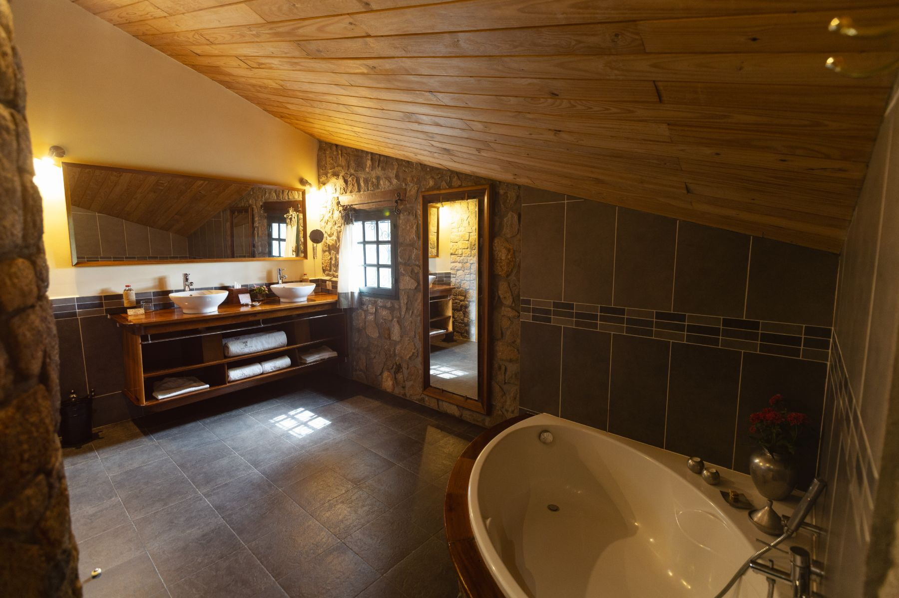
Le Relais de la Reine04 / 16
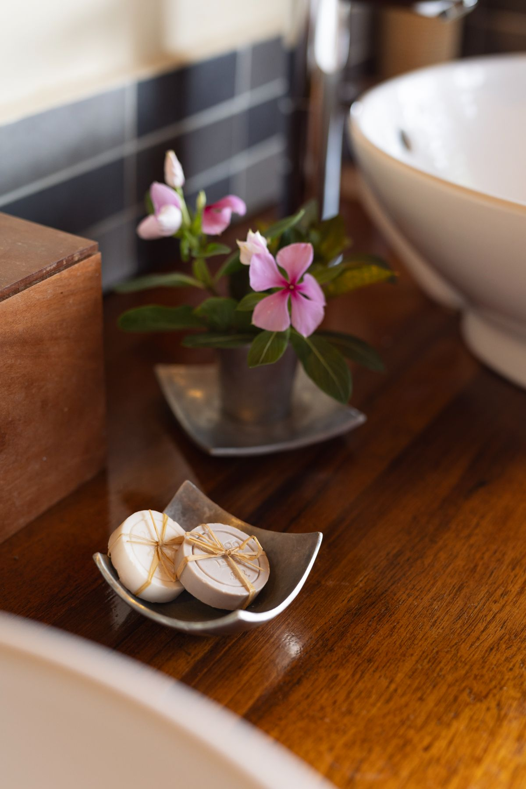
Le Relais de la Reine05 / 16
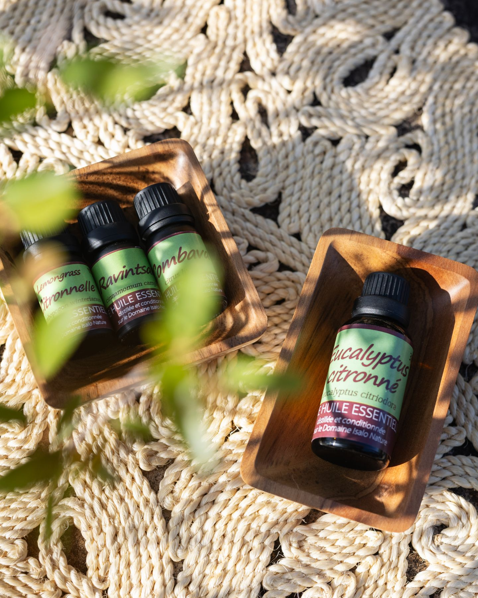
Le Relais de la Reine06 / 16
Le Relais de la Reine07 / 16
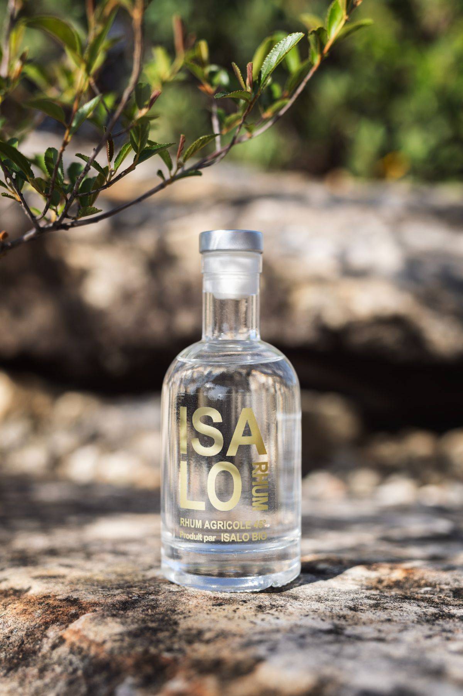
Le Relais de la Reine08 / 16
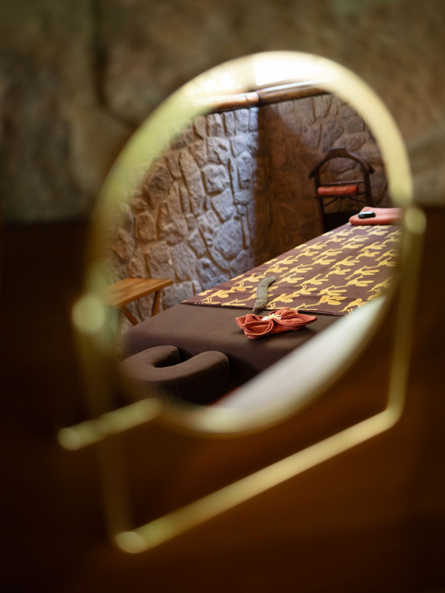
Le Relais de la Reine09 / 16
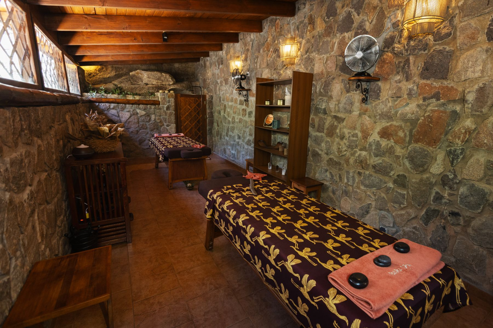
Le Relais de la Reine10 / 16
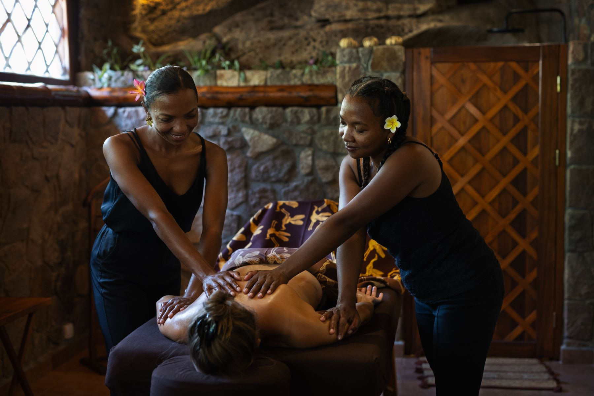
Le Relais de la Reine11 / 16
Le Relais de la Reine12 / 16
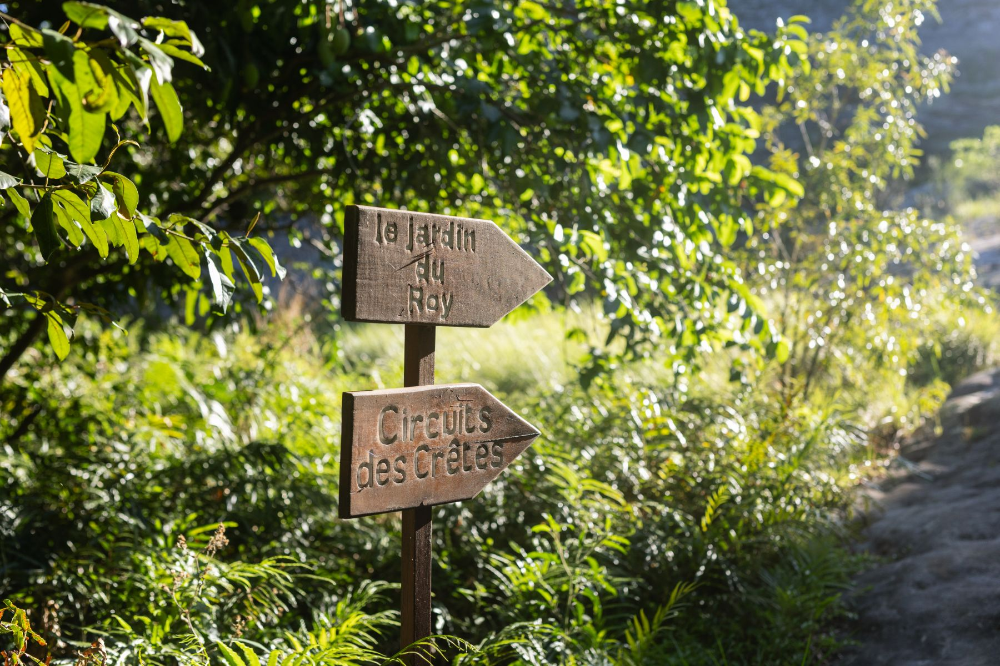
Le Relais de la Reine13 / 16
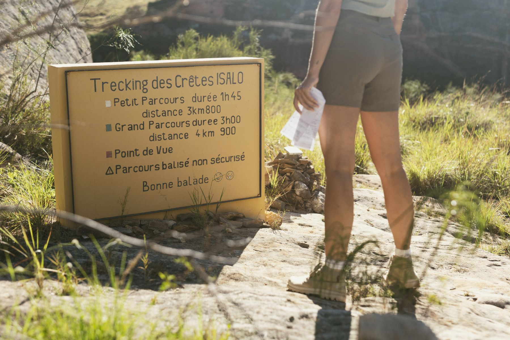
Le Relais de la Reine14 / 16
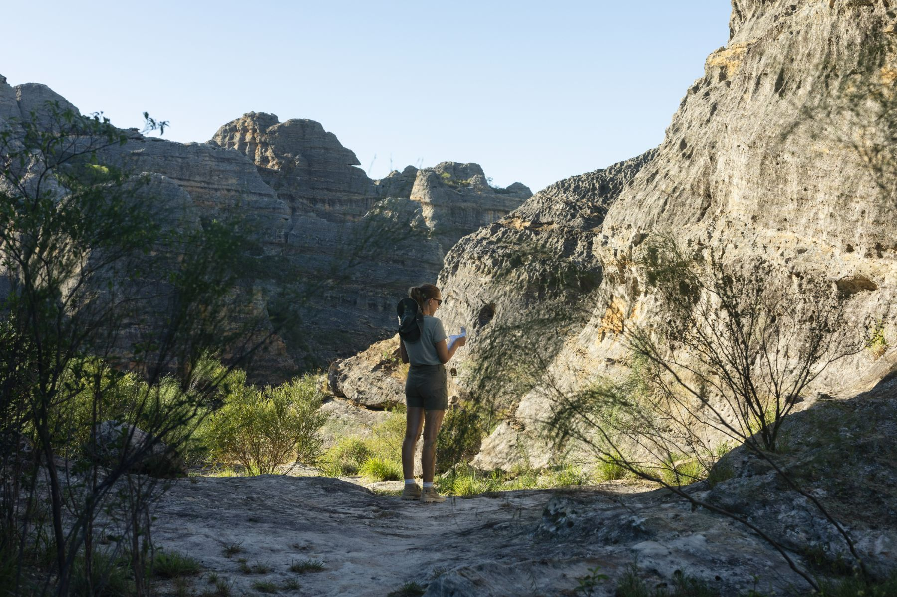
Le Relais de la Reine15 / 16
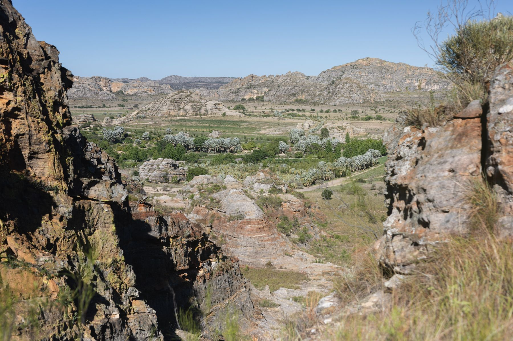
Le Relais de la Reine16 / 16